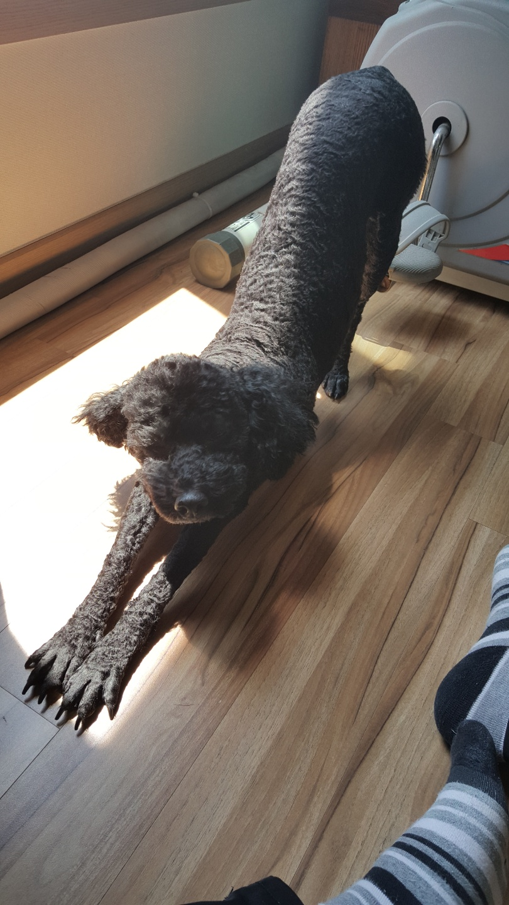

#1 견상정보
| 구분 | 세부 견상정보 |
|---|---|
| 이름 | 채콩 (蔡豆, Chae Black-bean) |
| 국적 | 한국 |
| 나이 | 7세 (1달 후 : 8세) |
| 생년월일 | 2015년 12년 20일 |
| 견종 | 미니어처 푸들 |
| 몸무게 | 6.2kg (과체중) |
| 성격 | 호기심이 많으나 겁도 많고 눈치가 빠르고 성격이 급한 편 |
| 최애 간식 Best 5. |
데이스포 케어츄르 오리+닭고기 맛 |
| 삶은 계란 | |
| 소고기 | |
| 상추 | |
| 당근 |
# 반려견 사진
-
_ 산책 중 풀 냄새 맡기를 좋아합니다.

-
_ 산책 후 널브러짐 주의 1.
-
_ 산책 후 널브러짐 주의 2.
-
_ 저세상 미견입니다.
-
_ 행인 구경을 좋아합니다.
-
_ 다리가 상당히 긴 편입니다.
 -
_ 겨울철 산책엔 중무장이 필수입니다.
-
_ 푸들 고질병 귀 염증 관리는 필수입니다.
-
_ 일광욕을 좋아합니다.
# 특기
| 현재 가능한 재주 | 앉아 |
|---|---|
| 일어서 | |
| 엎드려 | |
| 기다려 - 먹어 | |
| 돌아 (최대 3번) | |
| 하이파이브 (양손 연속 - 3번 까지 가능) | |
| 손 (양손 번갈아 5번까지 허용) | |
| 브이(신규 업데이트 됨.) |